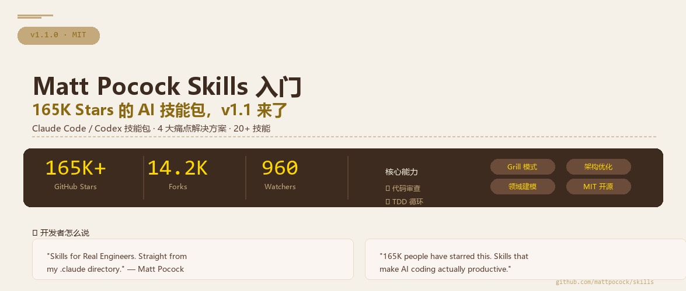
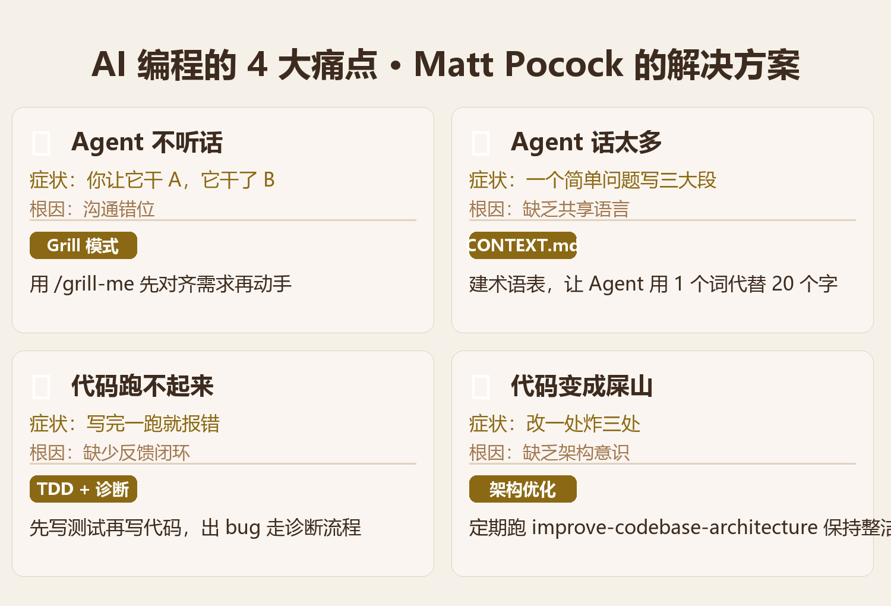
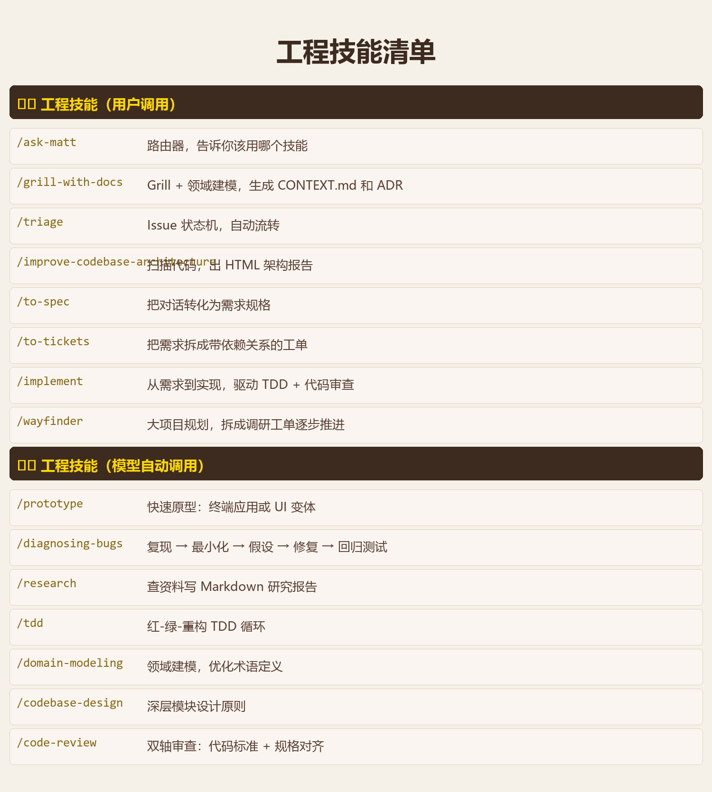
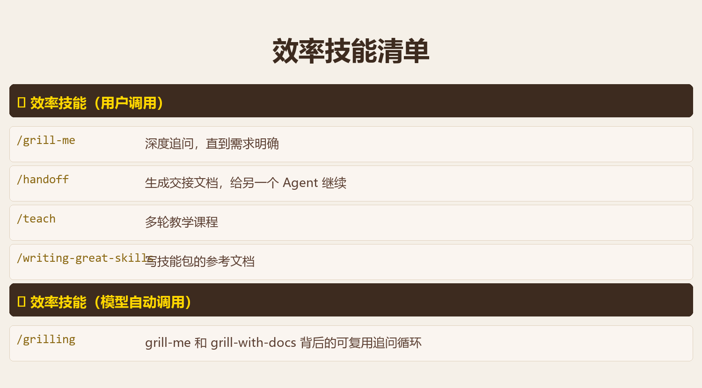
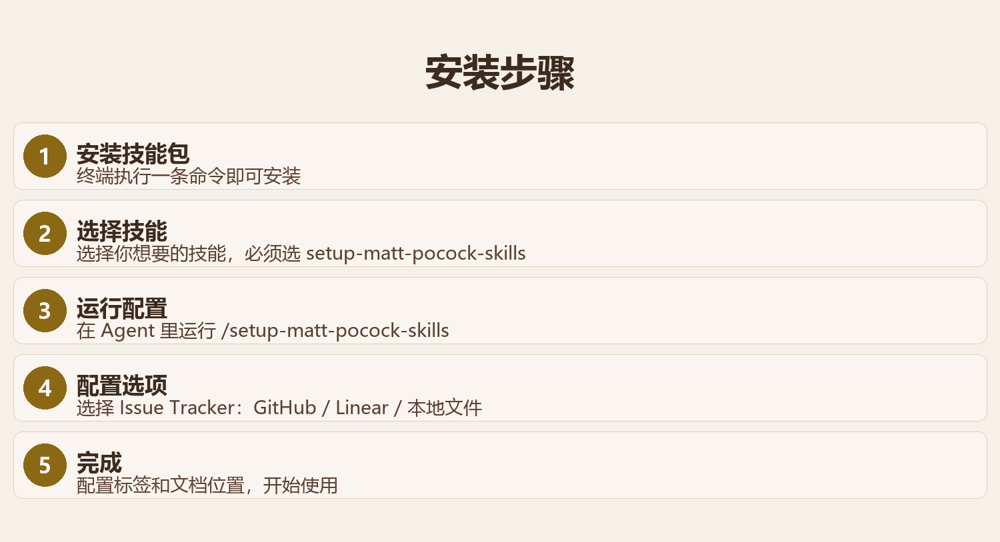

你用过 AI 写代码吗？用过的话，你一定遇到过这几个问题：AI 不听话、AI 话太多、AI 写的代码跑不起来、代码越写越烂。Matt Pocock——前端圈最懂 TypeScript 的男人——出了套技能包，专门解决这些问题。165K Stars，v1.1 最新版，今天咱们就来看看。
先简单介绍一下 Matt Pocock 是谁。TypeScript 圈子里没人不知道他——他是 Total TypeScript 的创始人，出了一堆 TypeScript 教程和工具，在 TypeScript 社区影响力巨大。现在他搞了一套 AI Agent 技能包，帮你解决 AI 编程中的各种糟心事。项目叫 mattpocock/skills，165K Stars，MIT 协议，免费开源。
01一句话说清楚这套技能包是什么
Matt Pocock Skills = 一套给 AI 编程助手用的技能指令 = 让 AI 从"瞎写"变成"靠谱工程师"
说白了，就是 Matt Pocock 把自己多年写 TypeScript 的经验，浓缩成了一套 Claude Code / Codex 能用的斜杠命令。装到你的 Agent 里之后，你敲 /grill-me、/tdd、/code-review，AI 就能按照 Matt 的工程方法论来干活。不是"vibe coding"那种玄学，是正经的软件工程实践。
Matt 自己说得很直白："Skills for Real Engineers. Straight from my .claude directory." 意思就是——这些技能就是从我自己的 Claude Code 配置里拿出来的，我自己每天都在用。
02AI 编程的 4 大痛点，他全给治了
Matt 总结了 AI 编程最常见的 4 个问题，每个都配了一个技能来解决。你看完就知道为什么这个项目能火到 165K Stars：

这 4 个问题，你用 AI 写代码应该都遇到过。Matt 的解法不是教你"更会写提示词"，而是给你一套流程和工具——你只管敲命令，剩下的 AI 按流程走。
03v1.1 完整技能清单
v1.1 版本一共 20+ 个技能，分三类：工程技能（用户调用）、工程技能（模型自动调用）、效率技能。下面这张图给你列全了：


你注意看几个重点技能：
🔥/grill-with-docs — 最值得用的技能
它会追问你的项目细节，帮你建立领域术语表（CONTEXT.md），然后生成架构决策记录（ADR）。Matt 说这是他的"王牌技能"——因为一旦 AI 懂了你的业务语言，代码质量直接上一个台阶。
🔄/implement — 从需求到上线的流水线
它把 /to-spec（需求规格）、/tdd（测试驱动）、/code-review（代码审查）串成一条流水线。你给一个需求，它自动走完"定规格 → 写测试 → 写代码 → 审查"的完整流程。
🔍/code-review — 双轴审查
它从两个维度审查代码：代码标准（有没有违反编码规范）和规格对齐（有没有实现需求）。两个维度并行审查，比人肉 review 还严格。
04安装只要 30 秒
安装过程极简，5 步搞定：

# 安装命令
npx skills@latest add mattpocock/skills
装完之后，在 Agent 里运行配置命令：
# 配置命令
/setup-matt-pocock-skills
⚠️ 新手提醒
安装时记得一定要选 /setup-matt-pocock-skills，这个是配置入口。不选的话，技能装上了也用不了。配置过程中它会问你用哪个 Issue Tracker（GitHub、Linear 还是本地文件），选哪个都行，不影响核心功能。
05Matt 的设计理念
这套技能包不只是一个工具集合，它背后有一套完整的设计理念。我总结了几条：
🧩可组合
各个技能可以组合使用。比如 /implement 内部会调用 /tdd 和 /code-review，技能之间互相配合，形成一个完整的工程流程。
🔧可定制
Matt 鼓励你"hack around with them"——随便改，改成你自己的风格。技能文件是 Markdown，你直接编辑就能调整。
🤖模型无关
不绑定 Claude 或 Codex，任何模型都能用。Matt 说"they work with any model"，你换模型不换技能。
📐工程至上
Matt 反复强调"software engineering fundamentals matter more than ever"。这些技能就是把软件工程的基本功——TDD、代码审查、架构设计——浓缩成 AI 可执行的流程。
06谁最适合用这套技能包？
👨💻正在用 AI 写代码的开发者
如果你已经在用 Claude Code 或 Codex，装上这套技能包，你的 AI 从"写代码"变成"做工程"。
🏗️技术负责人 / 架构师
想给团队建立一套 AI 辅助开发的标准化流程？/grill-with-docs 和 /code-review 可以直接用来做团队规范。
🧪TDD 信仰者
/tdd 技能实现了红-绿-重构循环，让 AI 严格按照 TDD 流程写代码。先写测试、再写实现、最后重构。
📌 这节课你学到了什么
✅ Matt Pocock Skills 是什么——165K Stars 的 AI 编程技能包
✅ 4 大痛点解决方案——AI 不听话、话太多、代码跑不动、屎山
✅ 20+ 技能分类——工程技能（用户/模型调用）+ 效率技能
✅ 三个王牌技能——/grill-with-docs、/implement、/code-review
✅ 安装 30 秒——npx 一条命令，5 步配置
✅ 设计理念——可组合、可定制、模型无关、工程至上
📒
笔记完成
你已经了解了 Matt Pocock Skills v1.1 的全貌。
下一步就是装到你的 Agent 里试一试——从 /grill-me 开始，体验一下"真工程师"的 AI 工作流。
📖 参考：github.com/mattpocock/skills — README、CHANGELOG
📊 数据来源：GitHub 2026.07 — mattpocock/skills 以 165K+ Stars 成为 AI 工程工具顶流